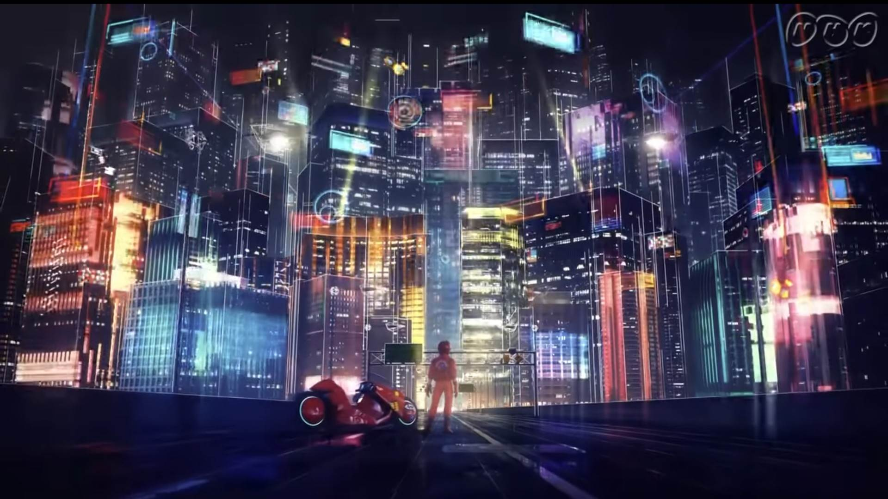

赛博朋克的主要精神
赛博朋克是一种充满反抗和创新精神的文化运动，主张以下核心价值观：
- 科技与混沌： 赛博朋克强调技术和社会的融合，探讨了科技发展可能引发的混乱和道德困境。
- 反抗权威： 赛博朋克作品通常包含对权威和威权的质疑，以及对反抗和个人自由的探讨。
- 虚拟现实： 赛博朋克关注虚拟现实、人机融合和数字化身份，强调了现实与虚拟之间的模糊界限。
- 社会变革： 赛博朋克作品通常涉及对社会和文化变革的探讨，以及技术如何影响人类生活的思考。
赛博朋克主张个体的权利和自由，同时批判科技可能带来的负面影响。这一精神在文学、电影和游戏中得到了广泛表达。
